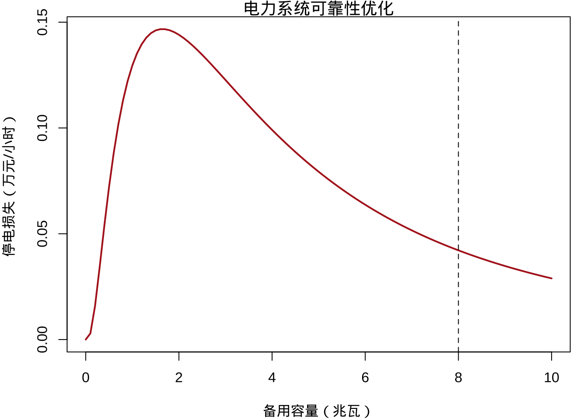
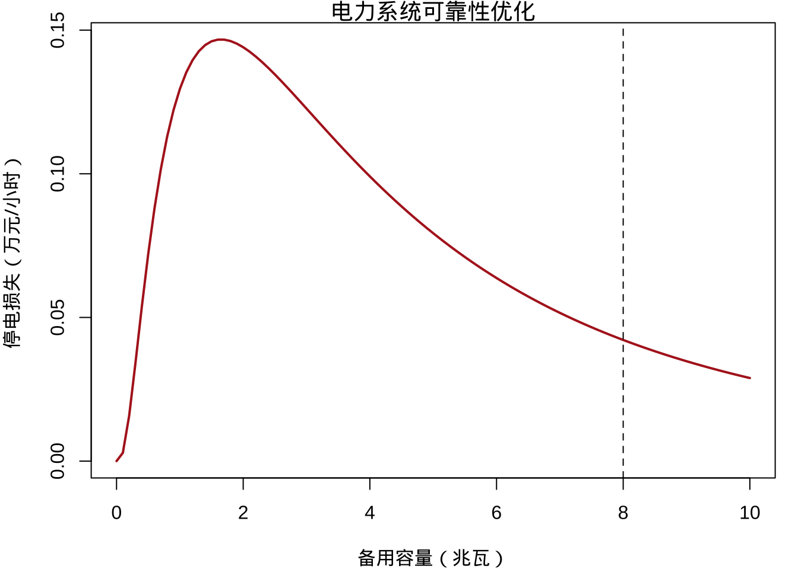
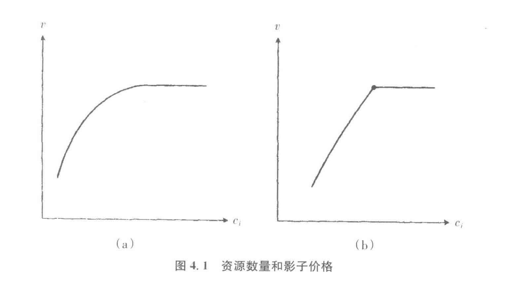

Loading required package: sysfontsLoading required package: showtextdb
拉格朗日乘数法与影子价格
范翻
中央财经大学(CCFD)
Loading required package: sysfontsLoading required package: showtextdb
情景设定：
某地区电网需要预留备用发电机预防突发停电
现有容量为8000兆瓦，停电损失曲线呈对数正态分布
监管机构考虑是否增加200兆瓦备用容量
决策难题：
新增容量需投入2亿元设备费用，对输电网络进行扩容
如何评估该投资的边际效益？
如何刻画上面这个问题？
目标函数是什么？
最小化电力系统总成本：
备用设备投资 \(c \cdot x\)
预期停电损失 \(\mathbb{E}[L(x)]\)
决策变量是什么？
约束条件是什么？
数学表达:
\[\begin{align*} \max_{x} \quad & C(x) = c \cdot x + \mathbb{E}[L(x)] \\ s.t. &\quad x \leq X_{max} \end{align*}\]
构造拉格朗日函数： \[ \mathcal{L} = c x + \mathbb{E}[L(x)] + \lambda (X_{\text{max}} - x) \]
一阶条件：
\[ \frac{\partial \mathcal{L}}{\partial x} = c + \frac{\partial \mathbb{E}[L]}{\partial x} - \lambda = 0 \] 解得： \[ \lambda = c + \frac{\partial \mathbb{E}[L]}{\partial x} \]
影子价格的经济解读
数学定义 \(\lambda =\) 约束条件右端（容量上限）微小增加时，总成本的边际变化率：\(\lambda = \frac{dC}{dX_{max}}\)
物理意义
决策信号
什么是最优化问题中的影子价格？
为什么计划经济中的\(\pi_g\)与市场价格体系中的价格机制具有相似性？
请用实例说明互补松弛条件中的\(\lambda_i=0\)意味着什么经济现象？
假设一个简单的最优化问题，包括两个选择变量\((x_1, x_2)\)，一个目标函数\(F(x)\)和一个约束等式\(G(x) = c\)；
令\(\bar{x}\)代表最优选择，\(v = F(\bar{x})\)表示最高所达到的值；
假定\(c\)增加一个无穷小量\(dc\)，令\(\bar{x} + d\bar{x}\)为新的最优选择， \(v + dv\)为新的最优值。
思考：
\(d\bar{x}\)与上一讲的x的微小变动\(dx\)是一回事么？
\(dv\)和\(dc\)之间有什么关系？
将目标函数F和约束函数G的值的变化进行一阶泰勒近似，我们有：
\[ \begin{aligned} dv & = F(\bar{x} + d\bar{x}) - F(\bar{x}) \\ & = F_1(\bar{x})d\bar{x}_1 + F_2(\bar{x})d\bar{x}_2 \\ & = \lambda[G_1(\bar{x})d\bar{x}_1 + G_2(\bar{x})d\bar{x}_2] \\ & = \lambda[G(\bar{x} + d\bar{x}) - G(\bar{x})] \\ & = \lambda[(c + dc) - c] = \lambda dc \end{aligned} \]
因此，一阶条件中的乘子\(\lambda = dv/dc\)就是目标函数所能达到的最大值的变动，与约束等式右边参数的变动的比例。
如果v为\(F(x)\)在向量约束\(G(x) = c\)下的最大值，\(\lambda\)为对应约束的乘子组成的列向量，那么由无穷小量变动\(dc\)引起的变动\(dv\)由下式给出：
\[ dv = \lambda dc = \sum_{i} \lambda_i dc_i. \]
考虑一个计划经济，通过选择一个生产计划\(\bar{x}\)以最大化社会福利函数\(F(x)\)。
这个计划需要资源向量\(G(x)\)，这些资源的现有数量为向量\(c\)。假定这个问题已经被求解出来，则拉格朗日乘子向量\(\lambda\)为已知。
假定经济以外的某个力量，对第一种资源（比如说劳动）投入一个小的增量\(dc_1\)。
最大化问题就可以在新的劳动约束下求解，以确定一种新的生产方式。
劳动的微小增量所导致的社会福利的增加值是\(\lambda_1 dc_1\)，因此，我们认为乘子\(\lambda_1\)就是这个经济中以社会福利单位来衡量的劳动的边际产出。
考虑存在两种资源的情况，资源1是劳动，资源2是土地。假设提供给这个经济额外的劳动\(dc_1\)，但是要求\(dc_2\)单位的土地作为回报。
在这一交易中，社会福利净收益为\(d\lambda_1 dc_1 - \lambda_2 dc_2\)，因而社会计划者最多愿意放弃的土地为\((\lambda_1/\lambda_2)dc_1\)。
因此，我们可以把比例\((\lambda_1/\lambda_2)\)称为以土地单位来衡量的每单位劳动的需求价格，也就是土地和劳动的相对价格。
为了引出同价格的联系，同时又为了和市场价格在概念上有所区别，拉格朗日乘子常被称作影子价格。
考虑一个计划经济体制，中央计划者将在消费者间分配商品，各种商品的产量是已知的。假设有C个消费者，\(c = 1, 2, \cdots, C\)，和G种商品，\(g = 1, 2, \cdots, G\)。记商品g的总数量为\(X_g\)，其分配给消费者c的数量为\(x_{cg}\)。
每个消费者的效用都取决于分配到的各种商品的数量： \[ u_c = U^{c}(x_{c1}, x_{c2}, \cdots, x_{cG}). \]
社会福利函数是关于所有消费者效用的函数: \[ w = W(u_1, u_2, \cdots, u_C) \]
中央计划者面临的约束为: \[ x_{1g} + x_{2g} + \cdots + x_{cg} = X_g, g = 1, 2, \cdots, G \]
构造拉格朗日函数
\[ \begin{aligned} \mathcal{L} = & W(U^{1}(x_{11}, x_{12}, \cdots, x_{1G}), \cdots, U^{C}(x_{C1}, x_{C2}, \cdots, x_{CG})) + \\ &\sum_{g} \pi_g[X_g - \sum_c x_{cg}] \end{aligned} \]
其中，\(\pi_g\)表示对应于商品g的约束条件的拉格朗日乘子。
此时，拉格朗日函数的一阶条件为
\[ \frac{\partial \mathcal{L}}{\partial x_{cg}} = \frac{\partial W}{\partial u_c} \frac{\partial U^{c}}{\partial x_{cg}} - \pi_g = 0. \]
现在考虑市场经济体制，假定每种商品的价格为\(\pi_g\)，并给予每一个消费者c一定的货币收入\(I_c\)，允许其在预算约束下最大化自己的效用。因此，市场经济下每个消费者面临着效用最大化问题：
\[
\begin{aligned}
\mathop{\max_{x_{c1}, \cdots, x_{cn}}} & U(x_{c1}, x_{c2}, \cdots, x_{cn}) \\
s.t.\quad & \pi_1x_{c1} + \pi_2x_{c2} + \cdots \pi_{G}x_{cG} \leq I_c
\end{aligned}
\]
此时，最优化问题的一阶条件为
\[ \partial U^c/\partial x_{cg} = \lambda_c \pi_{g} \]
比较两种经济体制下的一阶条件FOC1和FOC2
\[ \begin{aligned} (\partial W/\partial u_c) (\partial U^c/\partial x_{cg}) & = \pi_g \\ \partial U^c/\partial x_{cg} & = \lambda_c \pi_{g} \end{aligned} \]
我们发现，如果对于所有的消费者c，令
\[ \partial W/\partial u_c = 1/\lambda_c \] 那么这两个式子是完全一样的。
回忆一下，对于效用最大化问题而言，拉格朗日乘子\(\lambda\)代表什么？ \[
\frac{\partial W}{\partial u_c} \lambda = 1
\]
意味着，每个消费者一单位收入对社会福利的边际影响是相等的。换句话说，收入的分配应该被这样安排，以使得在边际上，每一个消费者收入的社会价值都是相等的。只要做到这一点，他们就可以自由地选择自己的消费束。
拉格朗日乘子衡量了稀缺资源禀赋的增加带来的社会福利的增加。
直觉上，放松某个约束应该是一件有利的事情，因为计划着至少可以取得和原来一样高的福利水平。
困难在于，在具有等式约束的一般形式问题中，约束等式右边的数值增加并不必然意味着约束的放松。
因此，如果想要得到
拉格朗日乘子的互补松弛条件： \[ \lambda \geq 0,L_{\lambda}(\bar{x}) \geq 0 \]
或者说
\[
G^{i}(x) \leq c_i, \lambda \geq 0
\]
中至少有一个不等式是以等式形式成立的。拉格朗日乘子\(\lambda_i = 0\)意味着资源\(i\) 未被充分利用，出现闲置的情况：
如果某种资源已经被部分闲置，那么新增这种资源仍然会被闲置。此时目标函数的最大值不变，影子价格将为零。
正的影子价格意味着现有资源的一单位边际增加能够得到很好的使用，也就是说，原来的生产计划中这种资源没有被闲置。
假定\(c_i\) 刚好处在某个点上，在这一点资源\(i\)正好处在即将过剩的边际上，即已有的资源恰好被充分利用，但该资源任何的增量都不会再被使用。
互补松弛条件不能告诉我们，在这一点处，拉格朗日乘子为正还是为零。这取决于最大值\(v\) 在\(c_i\) 的斜率，在边界点处是平滑地变为零还是突然变为零。

情况1（图a）：斜率平滑地下降，在该点处的拉格朗日乘子为零；
情况2（图b）：斜率突然下降，即任何介于左边曲线斜率和右边直线斜率为零之间的\(\lambda_i\) 都有可能代表影子价格恰好从正转变为零。
一个四处旅行的富翁，可以在家乡商店里购买不同牌子的酒，也可以在世界各地的机场免税商店购买。免税商店中的价格便宜一些，但是他所能购买的总量受到海关的限制：
假设有n种牌子的酒，在富翁家乡商店的价格为\(p\)，在免税店的价格为\(q\)；
对于所有的品牌而言，免税店里的价格都较低，即\(q \ll p\)；
令x代表他在家乡购买的各种酒的数量，y代表他在免税店里购买的各种酒的数量；
富翁决定每年花在酒上的支出为I；
海关规定每年富翁可以进口K瓶免税酒；
富翁的效用取决于总的消费数量\(U = U(c), c = x+y\)。
拉格朗日函数为：
\[ L = U(c) + \lambda[I - px - qy] + \mu[K- ey] \]
对于每一种酒\(j\)，我们都有
\[ \partial L/\partial x_j = \partial U/\partial c_j - \lambda p_j \leq 0, x_j \geq 0 \]
满足互补松弛条件，同时，
\[ \partial L/\partial y_j = \partial U/\partial c_j - \lambda q_j - \mu \leq 0, y_j \geq 0 \] 也满足互补松弛条件。
如果富翁同时在家乡商店和机场免税店购买了正数量的酒j，那么
\[ \partial U/\partial c_j - \lambda p_j = 0 = \partial U/\partial c_j -\lambda q_j - \mu \]
或
\[ \lambda p_j = \partial U/\partial c_j = \lambda q_j + \mu \]
最多有一个\(j\)使得上式成立，否则，假定存在两种酒\(i\)和\(j\)，我们会有
\[ \lambda(p_i - q_i) = \mu = \lambda(p_j - q_j) \]
由于我们假定该消费者没有满足，\(\lambda\)是正的，所以
\[ p_i - q_i = p_j - q_j \]
现在假定酒j仅能在家乡商店里被购买，由于\(x_j > 0, y_j = 0\)，因此有：
\[ \partial U/\partial c_j = \lambda p_j \tag{FOC1} \]
和
\[ \partial U/\partial c_j \leq \lambda q_j + \mu \tag{FOC2} \]
对于FOC1，等式左边是酒j的边际效用，等式右边是在家乡商店购买酒j的边际机会成本；
对于FOC2，式子右边是在免税商店购买酒\(j\)的边际机会成本(怎么理解\(\mu\)?)。
消费者的购买原理是：在有较低的机会成本的商店里购买每一种牌子的酒。注意到 \[ \lambda q_j + \mu < \lambda p_i,\text{当且仅当} p_i - q_i > \mu/\lambda \] 因此，富翁会把各个牌子的酒按照他们在两种商店的绝对价格差进行排序，绝对价格差最大的酒在免税商店购买，价格差最小的在家乡商品购买。两者的交汇点恰好在用在免税限额的那一点。因此，最多只有一种牌子的酒会同时在两种商店里被购买。
经济学中的优化方法 经济学中的优化方法 最大值函数 拉格朗日方法 Test 拉格朗日方法 案例引入：电力市场中的备用容量定价{.allowframebreaks} 最大值函数 标准的最优化问题 凹函数及其导数 I 无约束最大化问题 期望效用 基本概念 I Home /index.html About /about.html https://github.com 案例引入：电力市场中的备用容量定价{.allowframebreaks}
经济学中的优化方法 经济学中的优化方法 经济学中的优化方法 经济学中的优化方法 拉格朗日乘数法与影子价格 拉格朗日乘数法与影子价格